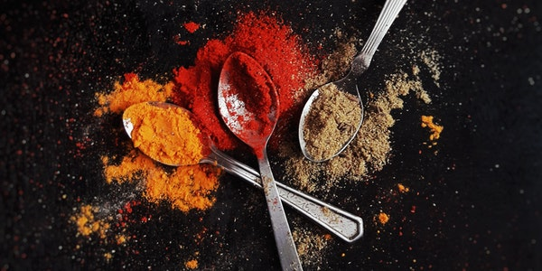
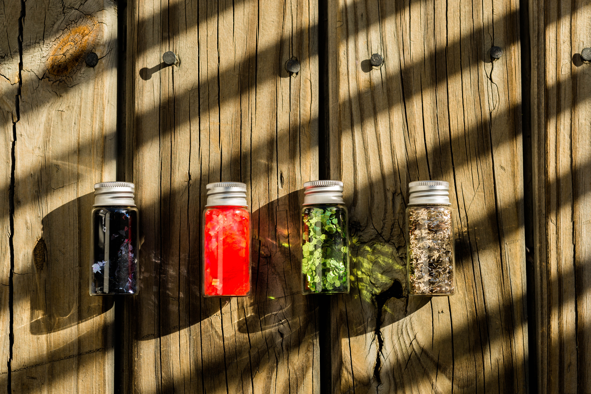

El aceite de canola además de su favorable compsosición de ácidos grasos, tiene un gran poder antioxidante los cuales pueden contribuir a sus propiedades cardioprotectoras

Considerado un superalimento por sus grandes propiedades medicinales, puede matar hongos, infecciones y bacterias en nuestro organismo.

el acéite de oliva tiene alto contenido en ácidos grasos, lo que hace que eleve los niveles de colesterol bueno HDL, disminuye el colesterol malo LDL y beneficia el control de la hipertensión arterial.